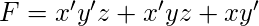
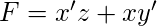
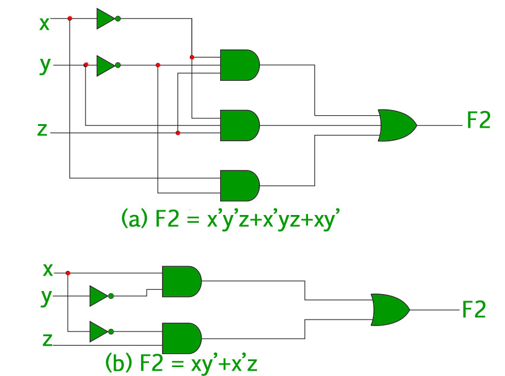
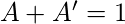
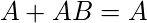
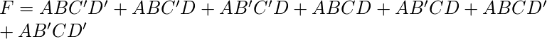
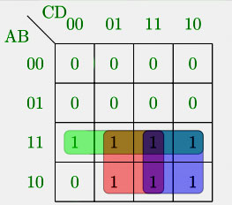
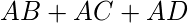

如“布尔函数的表示”中所讨论的，每个布尔函数可以表示为minterms的总和或maxterms的乘积。 由于这种表达式中的文字数量通常较高，并且实现布尔函数的数字逻辑门的复杂性与实现函数的代数表达式的复杂性直接相关，因此最好具有最多代数表达式的简化形式。
简化布尔函数的代数表达式的过程称为最小化 。 最小化很重要，因为它降低了相关电路的成本和复杂性。
例如，功能  可以最小化到  。 与上述表达式相关的电路是 -

从上面的图像可以清楚地看出，表达式的最小化版本需要较少数量的逻辑门，并且还基本上降低了电路的复杂性。 因此，最小化对于找到布尔函数的最经济等效表示非常重要。
最小化可以使用代数操作或K-Map方法完成。 每种方法都有自己的优点和缺点。
使用代数操作最小化 -
该方法是用于最小化的所有方法中最简单的。 它适用于涉及4或5个变量的中型表达式。 代数操作是一种手动方法，因此容易出现人为错误。
代数操作中使用的普通法则：
- 
- 
- 示例1 -使用代数操作最小化以下布尔函数-
 - 解决方案 -属性指的是上面提到的三个常见法则。
![\begin{align*} F=\:&ABC^\prime(D^\prime + D) +AB^\prime C^\prime D + ACD(B + B^\prime) &&\\ &\:+ ACD^\prime(B + B^\prime)&&\\ =\:&ABC^\prime +AB^\prime C^\prime D + ACD +ACD^\prime && \text{Using Property-1}\\ =\:&ABC^\prime +AB^\prime C^\prime D + AC(D +D^\prime )&&\\ =\:&ABC^\prime +AB^\prime C^\prime D + AC && \text{Using Property-1}\\ =\:&A(BC^\prime +C)+AB^\prime C^\prime D &&\\ =\:&A(B+C)+AB^\prime C^\prime D&& \text{Using Property-2}\\ =\:&AB +AC+AB^\prime C^\prime D &&\\ =\:&AB + AC + A C^\prime D && \text{Using Property-2}\\ =\:&AB + AC + AD && \text{Using Property-2}\\ \end{align*}](../../../imgs/digital-logic/377ef52a7ec8fd0521ad739870eb60f0.jpg "由QuickLaTeX.com呈现")
使用K-Map最小化 -
代数操作方法繁琐且繁琐。 K-Map方法更快，可用于解决最多5个变量的布尔函数。 请参阅此链接以了解有关K-Map的更多信息。
- 示例2 -考虑示例1中的相同表达式并使用K-Map将其最小化。
- 解决方案 -以下是给定表达式的4变量K-Map。

上图突出显示绿色，红色和蓝色的主要含义。
绿色的横跨整个第三排，这给了我们 -
红色的横跨4个方格，这给了我们 -
蓝色的横跨4个方块，这给了我们 -
因此，最小化的布尔表达式是 - 
GATE CS Corner问题
练习以下问题将帮助您测试您的知识。 所有问题都是在前几年的GATE或GATE Mock Tests中提出的。 强烈建议您练习它们。
1. GATE CS 2012，问题30
2. GATE CS 2007，问题32
3. GATE CS 2014 Set-3，问题17
4. GATE CS 2005，问题18
5. GATE CS 2004，问题17
6. GATE CS 2003，问题45
7. GATE CS 2002，问题12
引用-
K-Map - 维基百科
数字设计，莫里斯马诺和Michael Ciletti的第5版